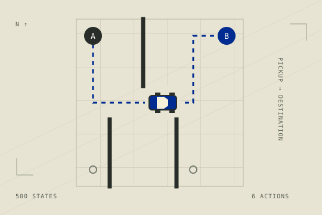

A repeatable test
30 episodes per agent, with environment seeds 42–71. Each agent runs independently. The results record the exact environment version and source revision.
30episodes / agent
Lab 02 — Q-learning
One city. Six actions. A better policy.
Train your agent and
see how it measures up.

The field
| Rank | Agent / participant | Mean reward | Std. dev. | Success* | Avg. steps | Inspect |
|---|
Side by side
Select up to two agents in the standings. These are recorded benchmark metrics. Try the Live Duel arena to play head to head.
Train locally. Open a pull request. Let the benchmark do the talking.
Same start. Two policies.
Challenge a policy yourself or watch two policies compete in a live, synchronized duel.
The selected policy could not be loaded. Trained policies need a published browser export; unsupported agents are never replaced with a built-in policy. See the policy formats below.
READY
READY
Winner: highest episode reward; fewer steps breaks a tie. Both players must finish. Select at most one human player.
Select a ranked policy for either player, or click Duel in the standings. The published page downloads its exported parameters and runs each action in your browser. Nothing needs to run on your computer outside this page.
Taxi Q-tables and discrete LunarLander PPO MLPs are exported
automatically during the tournament build. Authors can also supply a
compatible browser_policy.json. Other Python agents
remain eligible for the ranking, but need a browser export to play
here.
Live duels use Gymnasium's controls, observations and reward rules. The browser's random sequence and Box2D implementation differ from Python, so official evaluation results remain authoritative.
Browser policy formats and export checks ↗This fixed recording is an archived example, not a replay of your current selection. Evaluation revision and matchup metadata are unavailable.
From notebook to leaderboard
Your agent enters through a GitHub pull request. This site displays the results; your files stay in the repository.
Export your trained model and an
agent.py defining
agent(observation). Keep all required files
together.
Use the notebook’s submit_lab helper, or fork the
repository and add your files under your GitHub username. One
lab, one participant directory per PR.
submissions/lab2/your-github-login/ ├── agent.py └── qtable.npy
Open a pull request to main. Automated checks
validate your files and evaluate your agent in isolation. Your
PR receives a score report.
An instructor reviews your submission. After merge and a successful tournament run, the site publishes your official results.
Know the benchmark
All agents in a lab face the same seeded environments. Mean episodic reward determines the ranking.
30 episodes per agent, with environment seeds 42–71. Each agent runs independently. The results record the exact environment version and source revision.
Taxi uses six discrete actions. Normal steps cost −1, illegal pickup/drop-off costs −10, and successful delivery earns +20. Episodes are capped at 200 steps.
Taxi success rate is the share of episodes with a positive total reward. It is stricter than delivery alone. Passing mean reward: 4.5. Mastery: 7.0.
Standard deviation describes score variability. Average steps describes episode length; fewer steps alone does not imply a better policy.
Submit only your own agent directory. Evaluation infrastructure, baselines, website files, and other participants’ submissions are maintained by the instructors.
PR results are provisional. Published standings come from the merged revision’s official evaluation. Live Duel is for practice and does not change the official ranking.